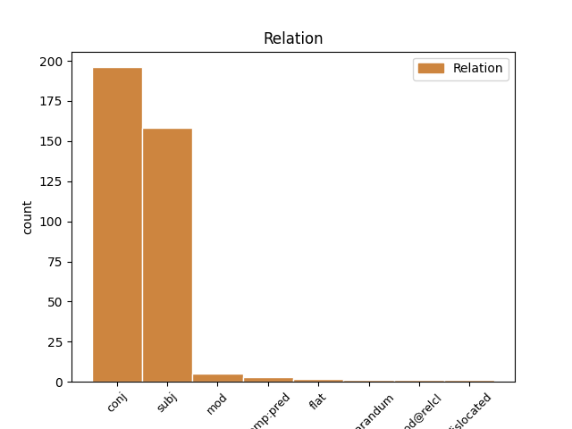
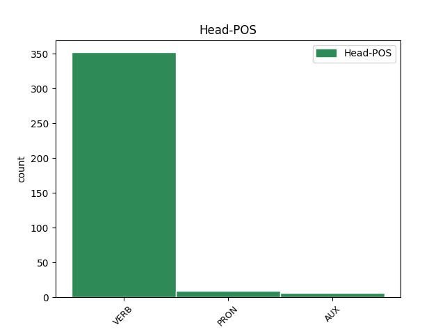
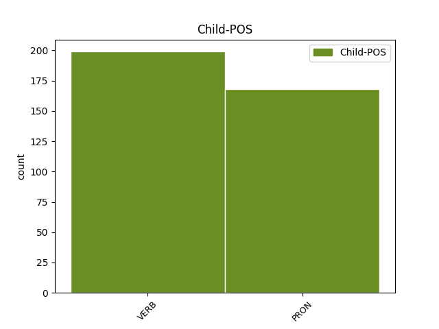

Distribution of features within this leaf



Agreement Rules sorted by frequency.
- When the dependent token is the conjunct(conj) of the head token, and the dependent token is VERB.
1 Французы _ _ _ _ 0 _ _ _
2 , _ _ _ _ 0 _ _ _
3 которые _ _ _ _ 0 _ _ _
4 были _ _ _ _ 0 _ _ _
5 у _ _ _ _ 0 _ _ _
6 Саши _ _ _ _ 0 _ _ _
7 на _ _ _ _ 0 _ _ _
8 радио _ _ _ _ 0 _ _ _
9 за _ _ _ _ 0 _ _ _
10 день _ _ _ _ 0 _ _ _
11 до _ _ _ _ 0 _ _ _
12 , _ _ _ _ 0 _ _ _
13 скачут скачать VERB _ Aspect=Perf|Mood=Ind|Number=Plur|Person=3|Tense=Fut|VerbForm=Fin|Voice=Act 0 _ _ _
14 козлами _ _ _ _ 0 _ _ _
15 по _ _ _ _ 0 _ _ _
16 сцене _ _ _ _ 0 _ _ _
17 , _ _ _ _ 0 _ _ _
18 машут махать VERB _ Aspect=Imp|Mood=Ind|Number=Plur|Person=3|Tense=Pres|VerbForm=Fin|Voice=Act 13 conj _ _
19 седыми _ _ _ _ 0 _ _ _
20 дредами _ _ _ _ 0 _ _ _
21 - _ _ _ _ 0 _ _ _
22 не _ _ _ _ 0 _ _ _
23 юные _ _ _ _ 0 _ _ _
24 , _ _ _ _ 0 _ _ _
25 но _ _ _ _ 0 _ _ _
26 до _ _ _ _ 0 _ _ _
27 чего _ _ _ _ 0 _ _ _
28 же _ _ _ _ 0 _ _ _
29 бодрые _ _ _ _ 0 _ _ _
30 ! _ _ _ _ 0 _ _ _
1 " _ _ _ _ 0 _ _ _
2 Саша _ _ _ _ 0 _ _ _
3 , _ _ _ _ 0 _ _ _
4 Саша _ _ _ _ 0 _ _ _
5 " _ _ _ _ 0 _ _ _
6 , _ _ _ _ 0 _ _ _
7 - _ _ _ _ 0 _ _ _
8 кричит _ _ _ _ 0 _ _ _
9 , _ _ _ _ 0 _ _ _
10 - _ _ _ _ 0 _ _ _
11 " _ _ _ _ 0 _ _ _
12 что _ _ _ _ 0 _ _ _
13 же _ _ _ _ 0 _ _ _
14 вы вы PRON _ Case=Nom|Number=Plur|Person=2 16 subj _ _
15 так _ _ _ _ 0 _ _ _
16 проходите проходить VERB _ Aspect=Imp|Mood=Ind|Number=Plur|Person=2|Tense=Pres|VerbForm=Fin|Voice=Act 0 _ _ _
17 ? _ _ _ _ 0 _ _ _
1 А _ _ _ _ 0 _ _ _
2 вы вы PRON PRON Case=Nom|Number=Plur|Person=2 0 _ _ _
3 , _ _ _ _ 0 _ _ _
4 о _ _ _ _ 0 _ _ _
5 гении _ _ _ _ 0 _ _ _
6 , _ _ _ _ 0 _ _ _
7 лишенные _ _ _ _ 0 _ _ _
8 приюта _ _ _ _ 0 _ _ _
9 , _ _ _ _ 0 _ _ _
10 Вы вы PRON PRON Case=Nom|Number=Plur|Person=2 2 conj _ SpaceAfter=No
11 , _ _ _ _ 0 _ _ _
12 Бейрон _ _ _ _ 0 _ _ _
13 , _ _ _ _ 0 _ _ _
14 Дант _ _ _ _ 0 _ _ _
15 и _ _ _ _ 0 _ _ _
16 Тасс _ _ _ _ 0 _ _ _
17 , _ _ _ _ 0 _ _ _
18 герои _ _ _ _ 0 _ _ _
19 без _ _ _ _ 0 _ _ _
20 войны _ _ _ _ 0 _ _ _
21 , _ _ _ _ 0 _ _ _
22 Для _ _ _ _ 0 _ _ _
23 вас _ _ _ _ 0 _ _ _
24 не _ _ _ _ 0 _ _ _
25 создана _ _ _ _ 0 _ _ _
26 в _ _ _ _ 0 _ _ _
27 теперешнем _ _ _ _ 0 _ _ _
28 минута _ _ _ _ 0 _ _ _
29 , _ _ _ _ 0 _ _ _
30 Но _ _ _ _ 0 _ _ _
31 веки _ _ _ _ 0 _ _ _
32 в _ _ _ _ 0 _ _ _
33 будущем _ _ _ _ 0 _ _ _
34 даны _ _ _ _ 0 _ _ _
35 . _ _ _ _ 0 _ _ _
1 У _ _ _ _ 0 _ _ _
2 Дародателя _ _ _ _ 0 _ _ _
3 людей _ _ _ _ 0 _ _ _
4 Испросим _ _ _ _ 0 _ _ _
5 к _ _ _ _ 0 _ _ _
6 подвигам _ _ _ _ 0 _ _ _
7 терпенья _ _ _ _ 0 _ _ _
8 , _ _ _ _ 0 _ _ _
9 Надеждой _ _ _ _ 0 _ _ _
10 души _ _ _ _ 0 _ _ _
11 оживём ожить VERB _ Aspect=Perf|Mood=Ind|Number=Plur|Person=1|Tense=Fut|VerbForm=Fin|Voice=Act 0 _ _ _
12 , _ _ _ _ 0 _ _ _
13 Доколе _ _ _ _ 0 _ _ _
14 в _ _ _ _ 0 _ _ _
15 вечные _ _ _ _ 0 _ _ _
16 селенья _ _ _ _ 0 _ _ _
17 Душой _ _ _ _ 0 _ _ _
18 свободной _ _ _ _ 0 _ _ _
19 не _ _ _ _ 0 _ _ _
20 взойдем взойти VERB _ Aspect=Perf|Mood=Ind|Number=Plur|Person=1|Tense=Fut|VerbForm=Fin|Voice=Act 11 mod _ SpaceAfter=No
21 . _ _ _ _ 0 _ _ _
1 8 _ _ _ _ 0 _ _ _
2 . _ _ _ _ 0 _ _ _
3 Противостоит _ _ _ _ 0 _ _ _
4 ей _ _ _ _ 0 _ _ _
5 мне _ _ _ _ 0 _ _ _
6 - _ _ _ _ 0 _ _ _
7 пох _ _ _ _ 0 _ _ _
8 - _ _ _ _ 0 _ _ _
9 баба _ _ _ _ 0 _ _ _
10 , _ _ _ _ 0 _ _ _
11 ребёнок _ _ _ _ 0 _ _ _
12 только _ _ _ _ 0 _ _ _
13 об _ _ _ _ 0 _ _ _
14 стену _ _ _ _ 0 _ _ _
15 не _ _ _ _ 0 _ _ _
16 долбиться _ _ _ _ 0 _ _ _
17 , _ _ _ _ 0 _ _ _
18 а _ _ _ _ 0 _ _ _
19 она _ _ _ _ 0 _ _ _
20 сидит сидеть VERB _ Aspect=Imp|Mood=Ind|Number=Sing|Person=3|Tense=Pres|VerbForm=Fin|Voice=Act 0 _ _ _
21 книжку _ _ _ _ 0 _ _ _
22 читает читать VERB _ Aspect=Imp|Mood=Ind|Number=Sing|Person=3|Tense=Pres|VerbForm=Fin|Voice=Act 20 comp:pred _ SpaceAfter=No
23 . _ _ _ _ 0 _ _ _
1 Хочу хотеть VERB _ Aspect=Imp|Mood=Ind|Number=Sing|Person=1|Tense=Pres|VerbForm=Fin|Voice=Act 0 _ _ _
2 - _ _ _ _ 0 _ _ _
3 хочу _ _ _ _ 0 _ _ _
4 - _ _ _ _ 0 _ _ _
5 хочу хотеть VERB _ Aspect=Imp|Mood=Ind|Number=Sing|Person=1|Tense=Pres|VerbForm=Fin|Voice=Act 1 flat _ _
6 их _ _ _ _ 0 _ _ _
7 ! _ _ _ _ 0 _ _ _
8 💜 _ _ _ _ 0 _ _ _
1 Их _ _ _ _ 0 _ _ _
2 отличает отличать VERB _ Aspect=Imp|Mood=Ind|Number=Sing|Person=3|Tense=Pres|VerbForm=Fin|Voice=Act 0 _ _ _
3 харизма _ _ _ _ 0 _ _ _
4 , _ _ _ _ 0 _ _ _
5 приятная _ _ _ _ 0 _ _ _
6 внешность _ _ _ _ 0 _ _ _
7 , _ _ _ _ 0 _ _ _
8 живой _ _ _ _ 0 _ _ _
9 аналитический _ _ _ _ 0 _ _ _
10 ум _ _ _ _ 0 _ _ _
11 , _ _ _ _ 0 _ _ _
12 хорошее _ _ _ _ 0 _ _ _
13 воспитание _ _ _ _ 0 _ _ _
14 и _ _ _ _ 0 _ _ _
15 манеры _ _ _ _ 0 _ _ _
16 , _ _ _ _ 0 _ _ _
17 за _ _ _ _ 0 _ _ _
18 которыми _ _ _ _ 0 _ _ _
19 всегда _ _ _ _ 0 _ _ _
20 спрятан _ _ _ _ 0 _ _ _
21 сильный _ _ _ _ 0 _ _ _
22 взгляд _ _ _ _ 0 _ _ _
23 , _ _ _ _ 0 _ _ _
24 в _ _ _ _ 0 _ _ _
25 котором _ _ _ _ 0 _ _ _
26 едва _ _ _ _ 0 _ _ _
27 просматривается просматриваться VERB _ Aspect=Imp|Mood=Ind|Number=Sing|Person=3|Tense=Pres|VerbForm=Fin|Voice=Mid 2 mod@relcl _ _
28 небольшая _ _ _ _ 0 _ _ _
29 грусть _ _ _ _ 0 _ _ _
30 . _ _ _ _ 0 _ _ _
1 А _ _ _ _ 0 _ _ _
2 вы вы PRON _ Case=Nom|Number=Plur|Person=2 5 reparandum _ _
3 а _ _ _ _ 0 _ _ _
4 у _ _ _ _ 0 _ _ _
5 вас вы PRON _ Case=Gen|Number=Plur|Person=2 0 _ _ _
6 что _ _ _ _ 0 _ _ _
7 ? _ _ _ _ 0 _ _ _
1 захватили _ _ _ _ 0 _ _ _
2 инструменты _ _ _ _ 0 _ _ _
3 души _ _ _ _ 0 _ _ _
4 ноги _ _ _ _ 0 _ _ _
5 порошки _ _ _ _ 0 _ _ _
6 и _ _ _ _ 0 _ _ _
7 расставив _ _ _ _ 0 _ _ _
8 монументы _ _ _ _ 0 _ _ _
9 засветив _ _ _ _ 0 _ _ _
10 свои _ _ _ _ 0 _ _ _
11 горшки _ _ _ _ 0 _ _ _
12 мы мы PRON PRON Case=Nom|Number=Plur|Person=1 20 dislocated _ _
13 на _ _ _ _ 0 _ _ _
14 дне _ _ _ _ 0 _ _ _
15 глубоком _ _ _ _ 0 _ _ _
16 моря _ _ _ _ 0 _ _ _
17 мы _ _ _ _ 0 _ _ _
18 утопленников _ _ _ _ 0 _ _ _
19 рать _ _ _ _ 0 _ _ _
20 мы мы PRON PRON Case=Nom|Number=Plur|Person=1 0 _ _ _
21 с _ _ _ _ 0 _ _ _
22 числом _ _ _ _ 0 _ _ _
23 пятнадцать _ _ _ _ 0 _ _ _
24 споря _ _ _ _ 0 _ _ _
25 будем _ _ _ _ 0 _ _ _
26 бегать _ _ _ _ 0 _ _ _
27 и _ _ _ _ 0 _ _ _
28 сгорать _ _ _ _ 0 _ _ _
Disagree Examples:
1 Зайдешь зайти VERB _ Aspect=Imp|Mood=Ind|Number=Sing|Person=2|Tense=Pres|VerbForm=Fin|Voice=Act 0 _ _ _
2 с _ _ _ _ 0 _ _ _
3 бедою _ _ _ _ 0 _ _ _
4 невесомой _ _ _ _ 0 _ _ _
5 за _ _ _ _ 0 _ _ _
6 грань _ _ _ _ 0 _ _ _
7 , _ _ _ _ 0 _ _ _
8 за _ _ _ _ 0 _ _ _
9 свет _ _ _ _ 0 _ _ _
10 , _ _ _ _ 0 _ _ _
11 И _ _ _ _ 0 _ _ _
12 ни _ _ _ _ 0 _ _ _
13 одной _ _ _ _ 0 _ _ _
14 звезды _ _ _ _ 0 _ _ _
15 знакомой _ _ _ _ 0 _ _ _
16 на _ _ _ _ 0 _ _ _
17 небе _ _ _ _ 0 _ _ _
18 — _ _ _ _ 0 _ _ _
19 нет нет VERB _ Aspect=Imp|Mood=Ind|Number=Sing|Person=3|Tense=Pres|VerbForm=Fin|Voice=Act 1 conj _ SpaceAfter=No
20 . _ _ _ _ 0 _ _ _
1 Кто _ _ _ _ 0 _ _ _
2 верит _ _ _ _ 0 _ _ _
3 , _ _ _ _ 0 _ _ _
4 что _ _ _ _ 0 _ _ _
5 мы _ _ _ _ 0 _ _ _
6 можем _ _ _ _ 0 _ _ _
7 взять _ _ _ _ 0 _ _ _
8 и _ _ _ _ 0 _ _ _
9 забрать _ _ _ _ 0 _ _ _
10 эти _ _ _ _ 0 _ _ _
11 деньги _ _ _ _ 0 _ _ _
12 себе _ _ _ _ 0 _ _ _
13 Я я PRON _ Case=Nom|Number=Sing|Person=1 14 subj _ _
14 нет нет VERB _ Aspect=Imp|Mood=Ind|Number=Sing|Person=3|Tense=Pres|VerbForm=Fin|Voice=Act 0 _ _ _
15 . _ _ _ _ 0 _ _ _
1 Я _ _ _ _ 0 _ _ _
2 покупаю покупать VERB _ Aspect=Imp|Mood=Ind|Number=Sing|Person=1|Tense=Pres|VerbForm=Fin|Voice=Act 0 _ _ _
3 ягодки _ _ _ _ 0 _ _ _
4 не _ _ _ _ 0 _ _ _
5 менее _ _ _ _ 0 _ _ _
6 10 _ _ _ _ 0 _ _ _
7 кг _ _ _ _ 0 _ _ _
8 весом _ _ _ _ 0 _ _ _
9 , _ _ _ _ 0 _ _ _
10 поэтому _ _ _ _ 0 _ _ _
11 за _ _ _ _ 0 _ _ _
12 один _ _ _ _ 0 _ _ _
13 присест _ _ _ _ 0 _ _ _
14 съесть _ _ _ _ 0 _ _ _
15 их _ _ _ _ 0 _ _ _
16 не _ _ _ _ 0 _ _ _
17 получается получаться VERB _ Aspect=Imp|Mood=Ind|Number=Sing|Person=3|Tense=Pres|VerbForm=Fin|Voice=Mid 2 conj _ SpaceAfter=No
18 . _ _ _ _ 0 _ _ _
1 8 _ _ _ _ 0 _ _ _
2 . _ _ _ _ 0 _ _ _
3 Противостоит противостоять VERB _ Aspect=Imp|Mood=Ind|Number=Sing|Person=3|Tense=Pres|VerbForm=Fin|Voice=Act 0 _ _ _
4 ей _ _ _ _ 0 _ _ _
5 мне я PRON _ Case=Dat|Number=Sing|Person=1 3 subj _ SpaceAfter=No
6 - _ _ _ _ 0 _ _ _
7 пох _ _ _ _ 0 _ _ _
8 - _ _ _ _ 0 _ _ _
9 баба _ _ _ _ 0 _ _ _
10 , _ _ _ _ 0 _ _ _
11 ребёнок _ _ _ _ 0 _ _ _
12 только _ _ _ _ 0 _ _ _
13 об _ _ _ _ 0 _ _ _
14 стену _ _ _ _ 0 _ _ _
15 не _ _ _ _ 0 _ _ _
16 долбиться _ _ _ _ 0 _ _ _
17 , _ _ _ _ 0 _ _ _
18 а _ _ _ _ 0 _ _ _
19 она _ _ _ _ 0 _ _ _
20 сидит _ _ _ _ 0 _ _ _
21 книжку _ _ _ _ 0 _ _ _
22 читает _ _ _ _ 0 _ _ _
23 . _ _ _ _ 0 _ _ _
1 Сережа _ _ _ _ 0 _ _ _
2 , _ _ _ _ 0 _ _ _
3 иди идти VERB _ Aspect=Imp|Mood=Imp|Number=Sing|Person=2|VerbForm=Fin|Voice=Act 0 _ _ _
4 с _ _ _ _ 0 _ _ _
5 ним _ _ _ _ 0 _ _ _
6 сам _ _ _ _ 0 _ _ _
7 на _ _ _ _ 0 _ _ _
8 прививку _ _ _ _ 0 _ _ _
9 , _ _ _ _ 0 _ _ _
10 я _ _ _ _ 0 _ _ _
11 боюсь бояться VERB _ Aspect=Imp|Mood=Ind|Number=Sing|Person=1|Tense=Pres|VerbForm=Fin|Voice=Mid 3 conj _ SpaceAfter=No
12 . _ _ _ _ 0 _ _ _